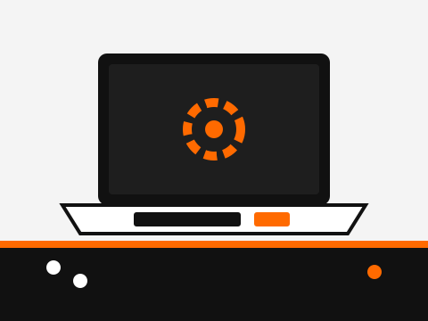
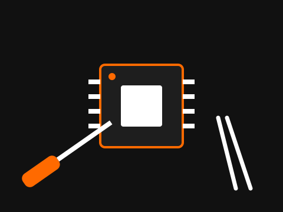

Про сервіс
«РемБокс» — це невелика майстерня в Києві, де ремонтують техніку так, як би ми ремонтували власну. Ми не змінюємо деталі «про запас» і завжди пояснюємо, що саме зламалося.
Кожен ремонт супроводжується письмовою гарантією. Якщо проблема повернулася, ми виправимо її безкоштовно.
Працюємо з оригінальними та якісними сумісними комплектуючими, а замінені старі деталі повертаємо клієнту.
До того ж ми безкоштовно підкажемо, чи варто ремонтувати пристрій, чи вигідніше придбати новий — чесно й без нав'язування послуг.
- Безкоштовна діагностика
- Гарантія до 6 місяців
- Більшість ремонтів — за 1–2 дні
- Ціна погоджується до початку робіт

Види ремонту
Ми беремося за найпоширеніші поломки. Якщо вашої проблеми немає в списку — зателефонуйте, і ми підкажемо.
Збережено послуг: 0
Нічого не знайдено. Спробуйте змінити запит або категорію.

Етапи роботи
Від вашого дзвінка до готового пристрою — чотири прості кроки.
- Заявка. Ви телефонуєте або приносите техніку в сервіс.
- Діагностика. Знаходимо причину поломки та називаємо точну вартість.
- Ремонт. Після вашої згоди замінюємо деталі й тестуємо пристрій.
- Видача. Ви перевіряєте роботу техніки та отримуєте гарантійний талон.
Контакти
Зателефонуйте, щоб записатися на діагностику або отримати консультацію.
Телефон +380 66 766 19 13
Контактна особа Скороход М. Є.
Місто Київ
Графік роботи Пн–Сб, 10:00–19:00
Заявка на ремонт
Залиште заявку — ми зателефонуємо, уточнимо деталі та запишемо на безкоштовну діагностику.